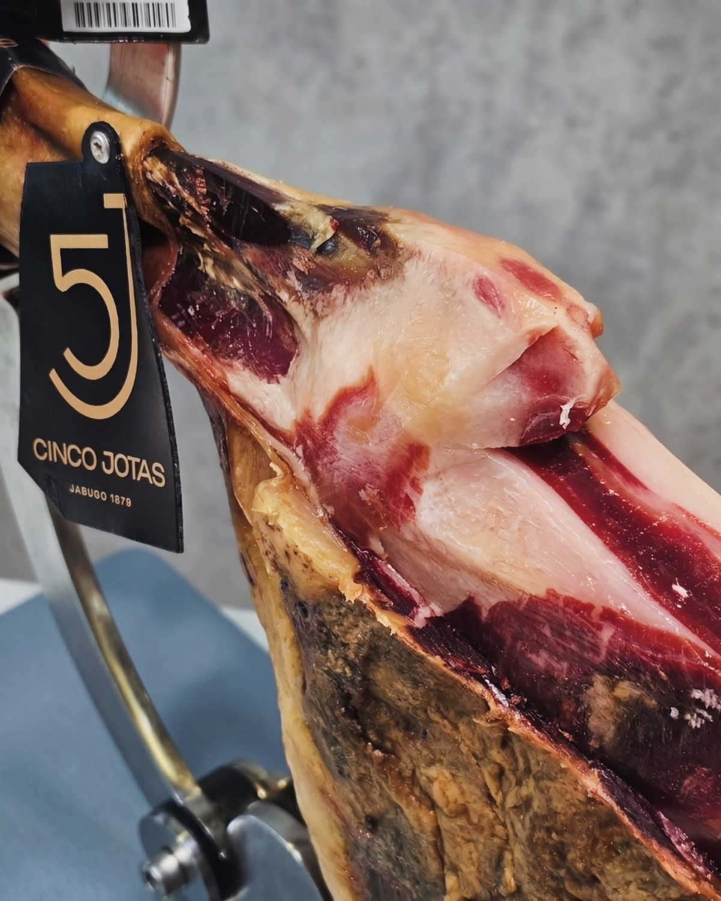
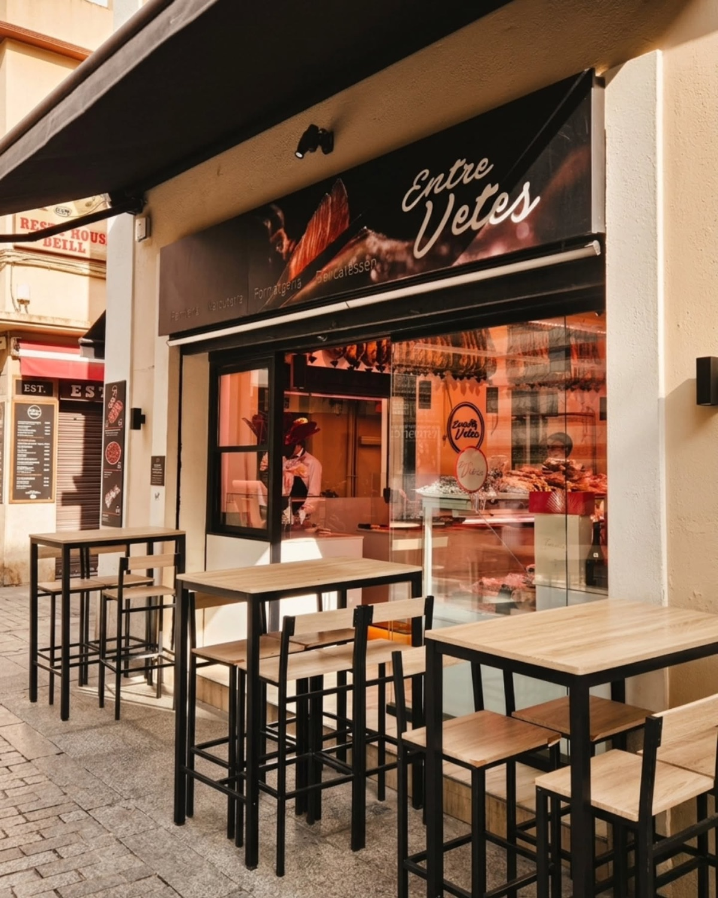
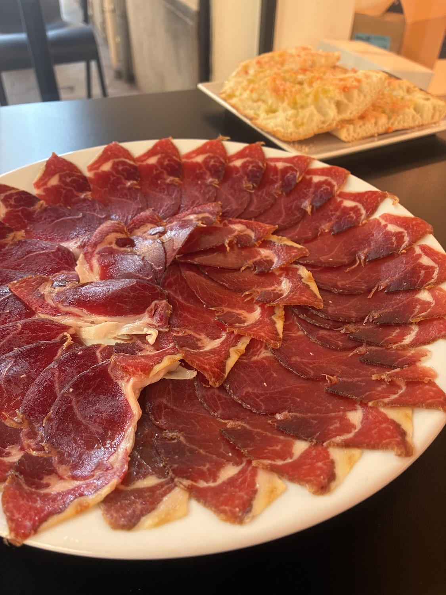
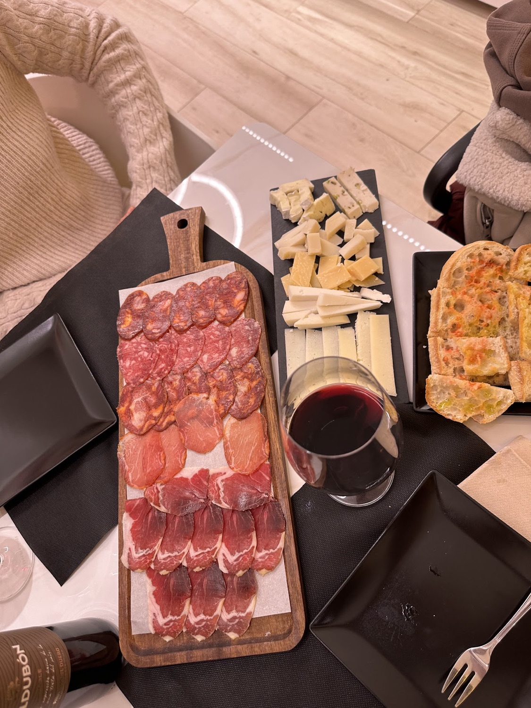
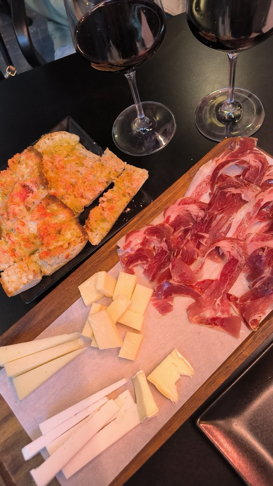
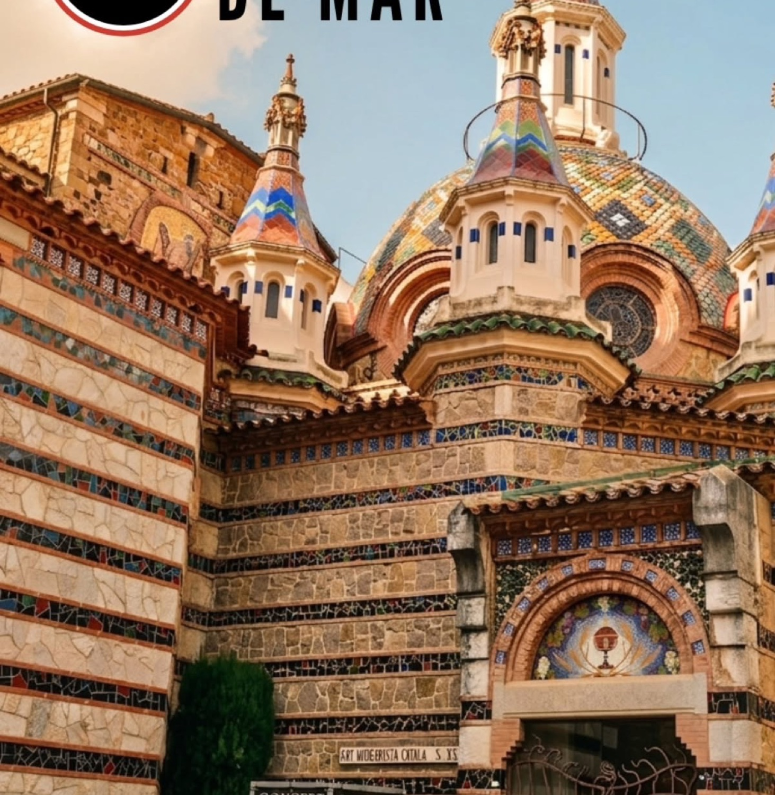

01
—
—
Pernileria · Delicatessen · Lloret de Mar
Jamón ibérico cortado a cuchillo, quesos con denominación, embutidos y vinos. Al lado de la Iglesia, con terraza para probarlo todo sin prisa.
4,8241 reseñas en Google



Por qué «Entre vetes»
Las vetas son esas líneas finas de grasa infiltrada que hacen que un buen ibérico se funda en la boca. Ahí, entre vetas, está el sabor. Y ahí estamos nosotros: con el cuchillo afilado, el queso a temperatura y la copa a punto.
I · Interactivo
Arrastra el cuchillo de lado a lado sobre la cara del jamón. Cada pasada es una loncha; llénale el plato a quien te acompañe.
Desliza sobre el jamón
II · Escuela del ibérico
Cada pata de ibérico lleva un precinto de color en la pezuña. Toca uno para saber qué esconde, y escúchalo contado desde el mostrador.
01
—
¿Puntitos blancos?
Son pequeños cristales de un aminoácido que aparecen en los jamones de curación larga. Crujen un poco al morder y suelen ser buena señal. Nuestro vídeo más visto lo explica en treinta segundos.
III · La vitrina
Lo último que hemos enseñado en Instagram. Arrastra para pasar y toca una pieza para leer su historia.
IV · Desde el mostrador
Así se trabaja detrás del mostrador. Lanza la tarjeta de arriba hacia un lado para ver la siguiente.
01—
V · Para tomar aquí
Dentro hay solo tres mesas y la terraza se llena: si venís en grupo, mejor llamar antes.


Precios y disponibilidad, en la tienda.
672 78 55 024,8★★★★★241 reseñas en Google
«Imprescindible para tomar algo en el mismísimo centro, al lado de la Iglesia. La tabla de jamón y quesos variados, muy recomendable.»
«Somos italianos, así que teníamos expectativas muy altas. Este lugar las superó: la mejor jamonería de Lloret, sin duda.»
«La tabla de embutidos muy generosa y buena, la burrata deliciosa y el pan súper crujiente.»
«Unos bocatas de jamón ibérico espectaculares, y nos dieron a probar un queso de oveja con trufa blanca.»
VI · Visítanos
En pleno centro de Lloret de Mar, a un paso de la Iglesia de Sant Romà.
| Lunes | 9:00–13:30 · 17:00–21:00 |
|---|---|
| Martes | 9:00–13:30 · 17:00–21:00 |
| Miércoles | 9:00–13:30 · 17:00–21:00 |
| Jueves | 9:00–13:30 · 17:00–21:00 |
| Viernes | 9:00–14:00 · 17:00–22:00 |
| Sábado | 9:00–14:00 · 17:00–22:00 |
| Domingo | Cerrado |
